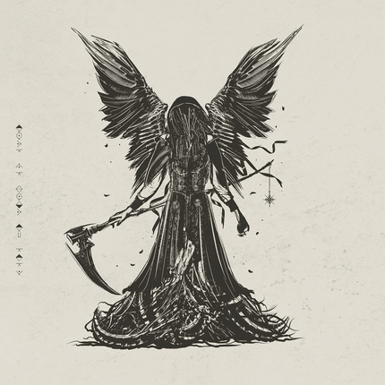

Песня, в которой раскрыта тема потери и желания вернуться к состоянию невинности.
В тексте описывается сонное состояние, в котором главный герой ищет направление и цель, но оказывается потерянным в мире смуты и хаоса.
В целом песня — это мощное исследование человеческого стремления к смыслу и борьбы за его поиск в мире.